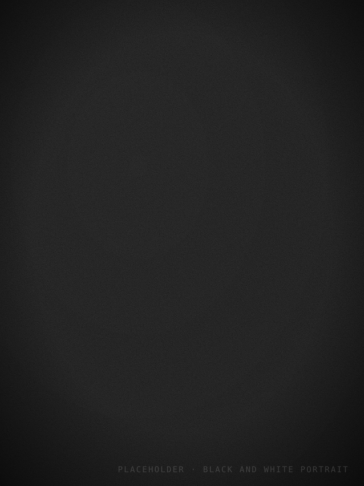
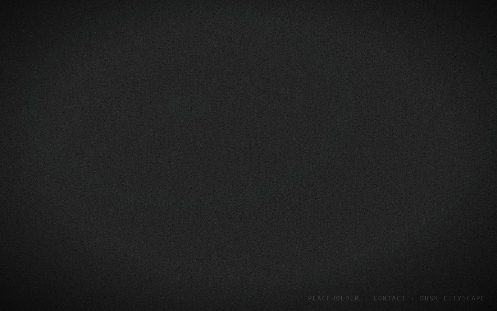

Editorial photography and moving image
Alisa McCloy
Quiet, image-led stories for people, places, brands, and independent collaborators.
View selected workPhotography
Film
Canterbury


Editorial photography and moving image
Quiet, image-led stories for people, places, brands, and independent collaborators.
View selected work